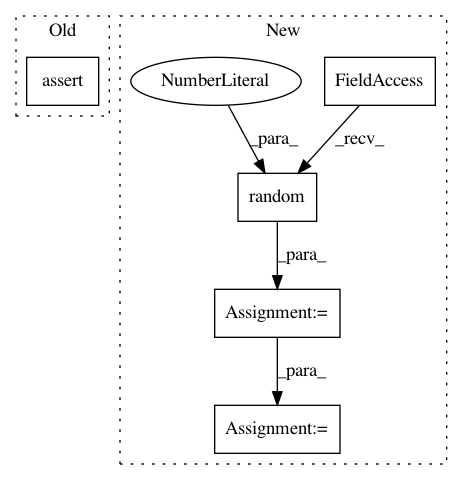

af61e2fbb45c53df3ff2a91f81a2026a8f66d90d,tests/tensorflow/test_nn.py,,test_gat_conv,#,309
Before Change
gat = nn.GATConv(5, 2, 4)
feat = F.randn((100, 5))
h = gat(g, feat)
assert h.shape[-1] == 2 and h.shape[-2] == 4
def test_sage_conv():
for aggre_type in ["mean", "pool", "gcn", "lstm"]:
ctx = F.ctx()
After Change
h = gat(g, feat)
assert h.shape == (100, 4, 2)
g = dgl.bipartite(sp.sparse.random(100, 200, density=0.1))
gat = nn.GATConv((5, 10), 2, 4)
feat = (F.randn((100, 5)), F.randn((200, 10)))
h = gat(g, feat)
@pytest.mark.parametrize("aggre_type", ["mean", "pool", "gcn", "lstm"])
def test_sage_conv(aggre_type):
ctx = F.ctx()
In pattern: SUPERPATTERN
Frequency: 3
Non-data size: 5
Instances
Project Name: dmlc/dgl
Commit Name: af61e2fbb45c53df3ff2a91f81a2026a8f66d90d
Time: 2020-03-29
Author: expye@outlook.com
File Name: tests/tensorflow/test_nn.py
Class Name:
Method Name: test_gat_conv
Project Name: nipy/dipy
Commit Name: ec2ae4f19fb7ee56bd8d33935b307a0dbc09c29a
Time: 2015-03-15
Author: arokem@gmail.com
File Name: dipy/reconst/tests/test_csdeconv.py
Class Name:
Method Name: test_csd_predict_multi
Project Name: dmlc/dgl
Commit Name: af61e2fbb45c53df3ff2a91f81a2026a8f66d90d
Time: 2020-03-29
Author: expye@outlook.com
File Name: tests/pytorch/test_nn.py
Class Name:
Method Name: test_gat_conv